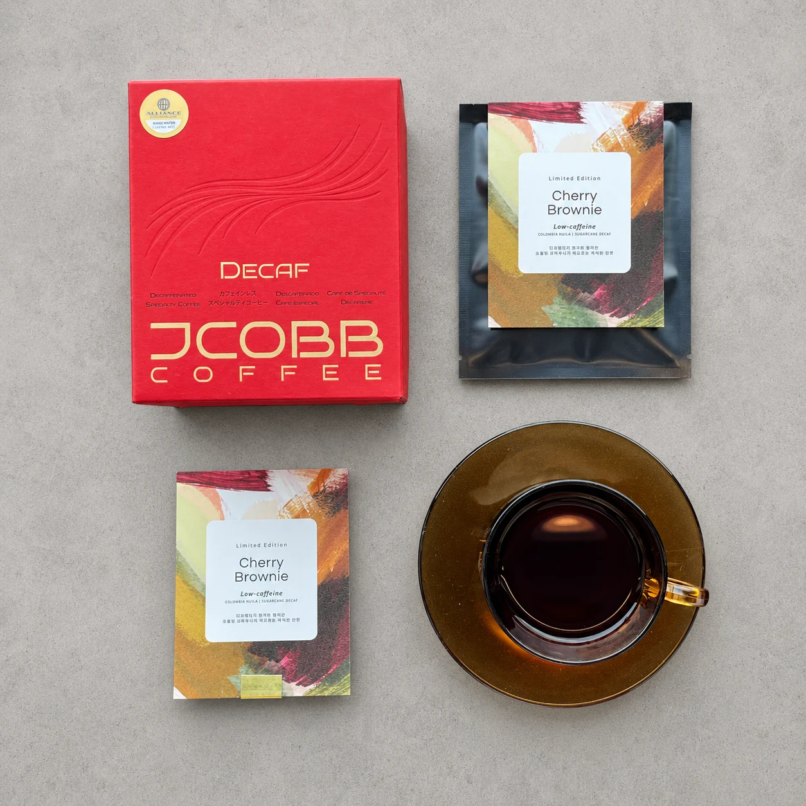

디카페인 아이스 아메리카노
가장 쉽게 도입 가능한 기본 메뉴. 오후 고객과 카페인 민감 고객에게 추천하기 좋습니다.
단순히 카페인을 줄인 커피가 아니라, 카페에서 메뉴로 판매할 수 있는 풍미와 활용성을 기준으로 제안합니다.

카페의 메뉴 스타일과 고객 취향에 맞춰 선택할 수 있습니다. 아이스 아메리카노, 라떼, 샤케라또 등 여름 시즌 메뉴에도 적용 가능합니다.
디카페인 드립백은 단순 진열 상품이 아니라, 매장에서 경험한 디카페인을 집으로 연결하는 추가 매출 상품입니다.

원두와 드립백, 시즌 메뉴 활용까지 함께 제안드립니다.